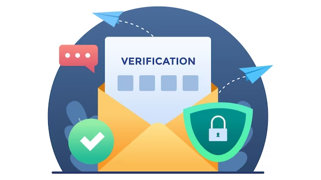

In today's digital age, emails have become an essential part of our daily lives. From personal communication to conducting business operations, emails have made our lives easier and more convenient. However, with the rise of email scams and phishing attacks, it has become crucial to secure our emails from unauthorized access. This is where email authentication comes into play, and one of the most significant components of email authentication is DMARC.
DMARC, which stands for Domain-based Message Authentication, Reporting, and Conformance, is a protocol that adds an additional layer of security to email messages. It allows email domain owners to protect their domain from being used for email scams and phishing attacks. With the help of DMARC, domain owners can ensure that their email messages are authentic and have not been tampered with.
DMARC, short for Domain-based Message Authentication, Reporting, and Conformance, is an email authentication protocol used by organizations to fight against email fraud and phishing attacks. It establishes a structure for validating the legitimacy of incoming emails by matching domain policies with the identity of the message sender.
The authentication of emails plays a vital role in upholding trust and security in the digital world. In the absence of proper authentication, cybercriminals have the ability to create fraudulent emails, pretend to be genuine organizations, and trick recipients into divulging sensitive information or carrying out harmful activities. Through the implementation of DMARC, organizations can verify the authenticity of their email communications, build trust with recipients, and safeguard their brand reputation.
DMARC works in conjunction with two well-known email authentication protocols, SPF and DKIM. SPF verifies the authorized IP addresses for sending emails on behalf of a domain, while DKIM ensures the integrity of the message content using cryptographic signatures.
After receiving an email, the recipient's email server checks if the sender's DNS contains DMARC records. These records specify the guidelines for authenticating emails from the domain and provide instructions for handling messages that fail authentication. The server then takes appropriate actions, such as delivering, quarantining, or rejecting the email.
Organizations can gain several benefits by implementing DMARC.

Although DMARC provides substantial advantages, there are certain difficulties associated with its implementation.
These best practices should be followed by organizations to successfully overcome the challenges linked with DMARC implementation.
To conclude, DMARC (Domain-based Message Authentication, Reporting and Conformance) is a crucial tool for email authentication and security. It helps to prevent email spoofing and phishing, which are two common attack methods used by cybercriminals to gain access to sensitive information. By implementing DMARC, organizations can protect their brand reputation, improve email deliverability, and enhance the security of their email communication.